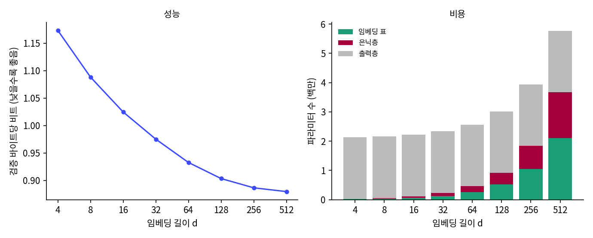
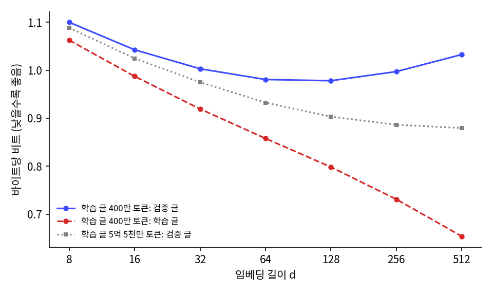

앞 글자 여럿 보기: 비슷한 낱말을 비슷하게 다루는 신경망
임베딩 길이 정하기: 왜 하필 64 인가
임베딩 이웃 목록을 한참 보던 민준이 모델 설정 파일로 돌아가 한 줄을 짚었다. n_embd: int = 64.

근데 이 64 는 누가 정한 거야? 벤지오 팀은 100 이었잖아. 512 로 늘리면 더 잘 맞히지 않을까? 한 번 학습에 39초니까 그냥 다 돌려 보자.

「더 잘」이 뭔데? 검증 글의 바이트당 비트가 낮아지는 거라면, 그만큼 무엇을 더 내는지도 같이 봐야지. 512 면 임베딩 표가 4,096 × 512 야.

209만 개쯤… 지금 모델 전체가 256만 개니까 거의 그만큼 더 붙는 거네.

반대로 줄이면 어떨까요? 길이를 8 로 하면 토큰 4,096 개를 수 여덟 개씩으로 적는 거예요.

실수 여덟 개면 4,096 개를 서로 다른 점으로 놓을 수는 있어요. 그런데 이름은 이름끼리, 색은 색끼리 모으고 나머지와는 떨어뜨려 놓을 방향이 모자랄 것 같아요.
둘의 걱정을 나란히 놓으면 물음이 분명해진다. 길이가 너무 짧으면 비슷하지 않은 토큰들도 몇 안 되는 방향을 나눠 써야 해서, 모델이 「 Lily」와 「 red」를 떼어 놓지 못할 수 있다. 너무 길면 파라미터가 늘어 메모리와 계산이 들고, 토큰마다 채워야 할 수가 많아진다. 학습 토큰 1억 개에서 6,300 번 나오는 「 Luna」 같은 드문 토큰은 그 많은 수를 채울 기회가 적어서, 학습 글을 외우기만 하고 새 글에서는 오히려 나빠질 수도 있다. 그러면 어디가 「너무 짧음」이고 어디가 「너무 긺」일까? 계산보다 먼저, 학습 한 번이 39초인 이 모델로 직접 재 보기로 했다.
비교 시험: 길이만 바꿔 여덟 번
본 학습과 모든 설정(앞 토큰 6 개, 은닉 512, 학습률 0.01, 워밍업과 코사인 감쇠, 4,000 스텝, 씨앗 1337)을 같게 두고 임베딩 길이 d 만 4 부터 512 까지 두 배씩 바꿨다. 학습마다 검증 글 전체의 바이트당 비트, 학습 글 앞 200만 토큰의 바이트당 비트, 파라미터 수, 걸린 시간을 적는다.
# sources/mlp-lm/embed_dim_sweep.py 에서 발췌
for d in [4, 8, 16, 32, 64, 128, 256, 512]:
cfg = MLPConfig(vocab_size=V, pad_id=tok.eot_id, block_size=BS, n_embd=d) # 길이 d 만 바꾼다
torch.manual_seed(1337)
m = MLPLM(cfg).to(dev)
h = T.train(m, tr, va, tb, batch_size=64, block_size=256, max_steps=4000, lr=1e-2, warmup=100, grad_clip=1.0)
full = T.evaluate(m, va, tb, 64, 256, len(va), dev) # 검증 글 전체
trn = T.evaluate(m, tr, tb, 64, 256, 2_000_000, dev) # 학습 글 앞 200만 토큰
## 1. 임베딩 길이 d 여덟 가지, 4,000 스텝씩 (나머지 설정은 본 학습과 같음)
d= 4 | 스텝 4,000 | 씨앗 1337 | 파라미터 2,130,432 (임베딩 16,384, 은닉 12,800, 출력 2,101,248) | 검증 bpb 1.1734 | 학습 글 bpb 1.1785 (차이 -0.0051) | 쓰는 축(90%) 4/4 | 27초
…
d= 64 | 스텝 4,000 | 씨앗 1337 | 파라미터 2,560,512 (임베딩 262,144, 은닉 197,120, 출력 2,101,248) | 검증 bpb 0.9326 | 학습 글 bpb 0.9359 (차이 -0.0033) | 쓰는 축(90%) 53/64 | 23초
…
d= 512 | 스텝 4,000 | 씨앗 1337 | 파라미터 5,771,776 (임베딩 2,097,152, 은닉 1,573,376, 출력 2,101,248) | 검증 bpb 0.8795 | 학습 글 bpb 0.8816 (차이 -0.0021) | 쓰는 축(90%) 384/512 | 30초
(전체 출력은 sources/mlp-lm/embed_dim_sweep.out. 길이 64 의 0.9326 은 본 학습과 같은 값이다.) 여덟 줄을 표로 옮기고, 길이를 두 배로 할 때 바이트당 비트가 얼마나 줄었는지를 옆에 적었다.
| 길이 d | 파라미터 전체 | 그 가운데 임베딩 표 | 검증 바이트당 비트 | 길이를 두 배로 해서 준 양 | 학습 시간 |
|---|---|---|---|---|---|
| 4 | 2,130,432 | 16,384 | 1.1734 | 27초 | |
| 8 | 2,159,104 | 32,768 | 1.0882 | 0.0852 | 23초 |
| 16 | 2,216,448 | 65,536 | 1.0247 | 0.0635 | 22초 |
| 32 | 2,331,136 | 131,072 | 0.9751 | 0.0496 | 22초 |
| 64 | 2,560,512 | 262,144 | 0.9326 | 0.0425 | 23초 |
| 128 | 3,019,264 | 524,288 | 0.9033 | 0.0293 | 23초 |
| 256 | 3,936,768 | 1,048,576 | 0.8864 | 0.0169 | 26초 |
| 512 | 5,771,776 | 2,097,152 | 0.8795 | 0.0069 | 30초 |


512 가 제일 좋네. 0.8795. 64 보다 0.05 넘게 낮아.

그런데 마지막 칸을 봐. 256 에서 512 로 갈 때는 0.0069 밖에 안 줄었어. 4 에서 8 로 갈 때는 0.0852 였는데.
길이를 두 배로 할 때마다 줄어드는 양이 0.0852, 0.0635, 0.0496, 0.0425, 0.0293, 0.0169, 0.0069 로 작아진다. 곡선이 다시 올라가는 곳은 512 까지 없었지만, 256 을 지나면서 거의 평평해졌다. 이 차이들이 우연이 아닌지 보려고 길이 64 를 씨앗만 바꿔 두 번 더 학습했더니, 씨앗 셋의 검증 바이트당 비트는 0.9326, 0.9327, 0.9323 이었다(최대와 최소의 차이 0.0004). 가장 작은 차이 0.0069 도 씨앗에서 오는 차이보다 열 배 넘게 크다.
비용은 반대로 움직인다. 64 에서 128 로 늘리면 파라미터가 458,752 개 늘고 바이트당 비트가 0.0293 준다. 256 에서 512 로 늘리면 파라미터가 1,835,008 개 늘고 0.0069 준다. 파라미터 수가 늘어난 만큼 무엇을 얻었는지로 따지면, 뒤쪽은 앞쪽보다 열 배 넘게 비싼 개선이다. 학습 시간은 22초에서 30초로 별로 달라지지 않았다. 길이와 상관없이 크기가 같은 출력층(파라미터 210만 개)이 계산의 큰 부분을 차지하기 때문으로 보인다(층별 시간을 따로 재지는 않았다).
「너무 길면 외운다」는 걱정은 이 실험에서는 나타나지 않았다. 여덟 모델 모두 학습 글의 바이트당 비트가 검증 글보다 조금 높다(차이 −0.0021 에서 −0.0051). 학습 토큰이 5억 5천만 개인데 4,000 스텝 동안 본 토큰은 6,554만 개라, 모델은 같은 글을 두 번 볼 일이 거의 없었다. 외울 기회가 없으니 외우지 못한 것이다.
토큰을 네 배(16,000 스텝, 2억 6,214만 토큰) 보게 하면 곡선은 어떻게 될까? 길이 16, 64, 256 을 다시 학습했다.
## 3. 데이터를 네 배로: 16,000 스텝씩
d= 16 | 스텝 16,000 | 씨앗 1337 | 파라미터 2,216,448 (임베딩 65,536, 은닉 49,664, 출력 2,101,248) | 검증 bpb 1.0045 | 학습 글 bpb 1.0085 (차이 -0.0040) | 쓰는 축(90%) 14/16 | 90초
d= 64 | 스텝 16,000 | 씨앗 1337 | 파라미터 2,560,512 (임베딩 262,144, 은닉 197,120, 출력 2,101,248) | 검증 bpb 0.9200 | 학습 글 bpb 0.9230 (차이 -0.0030) | 쓰는 축(90%) 53/64 | 88초
d= 256 | 스텝 16,000 | 씨앗 1337 | 파라미터 3,936,768 (임베딩 1,048,576, 은닉 786,944, 출력 2,101,248) | 검증 bpb 0.8689 | 학습 글 bpb 0.8710 (차이 -0.0021) | 쓰는 축(90%) 197/256 | 103초
세 길이 모두 0.013~0.020 씩 낮아졌고, 64 와 256 의 차이는 0.0462 에서 0.0511 로 조금 벌어졌다. 글을 더 보면 긴 임베딩이 조금 더 쓸모 있어지지만, 길이를 두 배로 할 때마다 얻는 양이 줄어드는 모양은 달라지지 않았다.
그럼 글이 아주 적으면 어떨까? 학습 토큰을 앞 400만 개로 줄여, 4,000 스텝 동안 같은 글을 약 16 번 되풀이해 읽게 했다.
## 1. 학습 글 400만 토큰, 4,000 스텝씩, 임베딩 길이 d 일곱 가지
d= 8 | 파라미터 2,159,104 | 마지막 검증 bpb 1.0998 | 학습 글 bpb 1.0625 (검증-학습 차이 +0.0373) | 학습 중 가장 낮은 검증 bpb 1.1007 (스텝 4000, 검증 앞 200만 토큰) | 26초
…
d= 64 | 파라미터 2,560,512 | 마지막 검증 bpb 0.9806 | 학습 글 bpb 0.8579 (검증-학습 차이 +0.1227) | 학습 중 가장 낮은 검증 bpb 0.9813 (스텝 4000, 검증 앞 200만 토큰) | 27초
d= 128 | 파라미터 3,019,264 | 마지막 검증 bpb 0.9781 | 학습 글 bpb 0.7984 (검증-학습 차이 +0.1797) | 학습 중 가장 낮은 검증 bpb 0.9790 (스텝 4000, 검증 앞 200만 토큰) | 27초
d= 256 | 파라미터 3,936,768 | 마지막 검증 bpb 0.9972 | 학습 글 bpb 0.7312 (검증-학습 차이 +0.2659) | 학습 중 가장 낮은 검증 bpb 0.9981 (스텝 4000, 검증 앞 200만 토큰) | 30초
d= 512 | 파라미터 5,771,776 | 마지막 검증 bpb 1.0326 | 학습 글 bpb 0.6541 (검증-학습 차이 +0.3785) | 학습 중 가장 낮은 검증 bpb 1.0322 (스텝 3750, 검증 앞 200만 토큰) | 36초
(전체는 sources/mlp-lm/embed_dim_small_data.out.)

이번에는 곡선이 돌아선다. 검증 글의 바이트당 비트는 길이 128 에서 0.9781 로 가장 낮고, 256 에서 0.9972, 512 에서 1.0326 으로 다시 올라가 길이 32 의 1.0030 보다도 나빠졌다. 학습 글의 값은 정반대로 512 까지 계속 내려가서 0.6541 이 되었다. 검증 글과 학습 글의 차이가 길이 8 의 0.0373 에서 512 의 0.3785 로 열 배 벌어졌다. 긴 임베딩은 400만 토큰을 열여섯 번 되풀이해 읽는 동안 그 글을 외웠고, 외운 것은 새 글에서 쓸모가 없었다. 서연이 걱정한 「너무 긺」은 글이 적을 때 나타났다.

아, 글이 많을 때는 512 가 제일 좋았는데, 글이 적으니까 128 이 제일 좋네. 같은 모델인데 답이 바뀌었어.
실험은 「64 는 좋은 값 가운데 하나이고, 더 길면 조금 낫지만 갈수록 비싸진다」고 말한다. 곡선이 왜 이런 모양인지, 길이 d 가 모델에게 무엇을 허락하고 무엇을 막는지를 네 방향에서 본다.
이론적 근거 1: 무관한 토큰을 떼어 놓을 방향
서연이 처음에 걱정한 것은 비슷하지 않은 토큰들을 떨어뜨려 놓을 방향이 모자라지 않을까 하는 것이었다. 무관한 두 벡터가 길이 d 에서 얼마나 가까워 보이는지는 지난 학기에 따져 본 적이 있다.
0 ± 1/√d 를 어휘 크기에 맞춰 직접 재 보았다. 길이 d 의 무작위 벡터 4,096 개를 뽑아 서로 다른 쌍 838만 개의 코사인 유사도를 구했다(sources/mlp-lm/embed_dim_theory.out 3절).
## 3. 길이 d 무작위 벡터 4,096 개끼리의 코사인 유사도 (서로 다른 쌍 8,386,560 개)
d= 4: 표준편차 0.5002 (1/√d = 0.5000), 가장 큰 값 1.0000, |코사인| > 0.5 인 쌍 39.14%
d= 8: 표준편차 0.3536 (1/√d = 0.3536), 가장 큰 값 0.9920, |코사인| > 0.5 인 쌍 17.05%
d= 16: 표준편차 0.2500 (1/√d = 0.2500), 가장 큰 값 0.9191, |코사인| > 0.5 인 쌍 4.10%
d= 64: 표준편차 0.1250 (1/√d = 0.1250), 가장 큰 값 0.6269, |코사인| > 0.5 인 쌍 0.00%
d= 256: 표준편차 0.0625 (1/√d = 0.0625), 가장 큰 값 0.3151, |코사인| > 0.5 인 쌍 0.00%
길이 4 에서는 아무렇게나 놓은 토큰 쌍의 39% 가 코사인 유사도 0.5 를 넘는다. 아무 관계 없는 토큰들도 열에 넷은 꽤 비슷해 보인다는 뜻이고, 학습한 임베딩에서 「 Lily」와 「 Mia」의 0.95 같은 값이 뜻을 갖기 어렵다. 길이 64 에서는 0.5 를 넘는 쌍이 거의 없고 가장 큰 값도 0.6269 다. 학습 전 「 Luna」의 이웃 「 pretending」이 0.48 이었던 것도 이 범위 안이다. 길이 64 쯤 되면 무관한 토큰들은 저절로 거의 직각으로 흩어지고, 학습은 비슷한 토큰만 골라 모으면 된다.
이론적 근거 2: 모든 거리를 지키려면 길이가 얼마나 필요한가
반대 방향의 물음도 있다. 토큰 4,096 개가 어떤 기하를 가져야 하든 그 기하를 짧은 벡터에 그대로 담으려면 길이가 얼마나 필요할까? 그 답은 수학자 윌리엄 존슨(William B. Johnson)과 요람 린덴스트라우스(Joram Lindenstrauss)의 1984년 논문에 들어 있다. 『현대 수학(Contemporary Mathematics)』 26권에 실린 「립시츠 사상을 힐베르트 공간으로 확장하기(Extensions of Lipschitz mappings into a Hilbert space)」다. 오늘날 존슨–린덴스트라우스 보조정리라 부르는 결과로, 고차원의 점 N 개는 모든 쌍의 거리를 1 ± ε(엡실론) 배 안에서 지키면서 길이 log N / ε² 에 비례하는 공간으로 옮길 수 있다는 것이다. 점의 개수가 늘어도 필요한 길이는 log N 으로만 늘어난다.
다스굽타(Sanjoy Dasgupta)와 굽타(Anupam Gupta)가 2003년에 다시 증명하며 정리한 상수로는 다음 길이면 충분하다(원 논문은 직접 열어 보지 못했고, 아래 부등식은 그 논문을 인용한 강의 노트에서 확인했다).
N = 4,096 을 넣으면 ε = 0.5(거리가 절반에서 1.5 배 사이)에도 k ≥ 399.3, ε = 0.1 이면 k ≥ 7,129.5 다(embed_dim_theory.out 1절). 어휘 4,096 개의 임의의 기하를 10% 안으로 지키려면 어휘 크기보다 긴 벡터가 필요하다는 말인데, 우리 모델은 길이 64 로도 잘 맞혔다. 보조정리는 점들이 아무렇게나 놓여 있어도 되는 최악의 경우를 보장하는 충분조건이고, 다음 토큰을 맞히는 데 필요한 기하는 아무렇게나가 아니다. 이름은 이름끼리, 색은 색끼리 모이면 되고, 「 cat」과 「 ran」 사이의 거리가 얼마인지는 상관이 없다. 짧은 임베딩이 통하는 것은 언어 쪽에 구조가 있어서다.
그 구조가 몇 축에 담기는지는 학습한 표에서 잴 수 있다. 실험 출력의 「쓰는 축(90%)」 칸은 학습한 임베딩 표의 특잇값 제곱합 가운데 90% 를 채우는 데 필요한 축의 개수다(주성분 분석에서 분산의 90% 를 설명하는 주성분 수와 같다). 길이 4 에서 4 축, 64 에서 53 축, 256 에서 202 축, 512 에서 384 축으로, 어느 길이에서나 주어진 축의 75~100% 를 썼다. 남는 축을 비워 두는 일 없이 받은 만큼 다 쓰되, 축 하나가 더하는 이득이 점점 작아진다. 곡선이 평평해지는 것은 축이 남아서가 아니라 새 축이 담을 구조가 줄어서다.
이론적 근거 3: 출력층이 그릴 수 있는 분포의 한계
길이가 출력에서 하는 일도 있다. 2017년 카네기 멜런 대학교의 양즈린(Zhilin Yang), 다이쯔항(Zihang Dai), 루슬란 살라후트디노프(Ruslan Salakhutdinov), 윌리엄 코언(William W. Cohen)은 「소프트맥스 병목 깨기(Breaking the Softmax Bottleneck)」를 내고 이듬해 ICLR 에서 발표했다. 문맥마다 다음 토큰의 로그 확률을 한 줄씩 쌓은 큰 행렬을 생각하자. 모델의 로짓은 출력층 W_U 에 길이 d 인 벡터를 곱해 나오므로, 모든 문맥의 로짓을 쌓은 행렬의 랭크(독립인 행의 최대 개수)는 d 를 넘지 못한다. 논문의 따름정리는 d 가 참 로그 확률 행렬의 랭크에서 1 을 뺀 값보다 작으면, 어떤 파라미터를 고르든 분포를 틀리게 내는 문맥이 반드시 있다는 것이다. 그들은 자연어의 로그 확률 행렬이 랭크가 높다고 가정하고(증명은 어렵다고 적었다), 흔히 쓰는 d 는 10² 규모인데 그 랭크는 어휘 크기인 10⁵ 규모일 수 있다고 썼다.
여기서 조심할 것이 있다. 우리 모델에서 출력층에 들어가는 벡터는 임베딩(길이 64)이 아니라 은닉 벡터 h(길이 512)다. 그러니 이 모델의 소프트맥스 병목은 은닉층의 폭 512 가 정하고, 임베딩 길이는 은닉층에 들어가는 정보의 양(앞 토큰 6 개 × d 개의 수)을 정한다. 이 책이 뒤에서 만드는 GPT 에서는 임베딩 길이가 곧 병목이다. 임베딩 표에서 꺼낸 벡터가 층들을 지나 그대로 출력층까지 가므로, 임베딩 길이가 모델의 폭이고 소프트맥스 병목의 d 가 된다.
이론적 근거 4: 너무 짧은 것과 너무 긴 것 사이
남은 걱정은 「너무 길면 외운다」였고, 길이를 고르는 일은 지난 학기에 곡선 맞추기에서 언덕 수를 고르던 일과 닮았다.
낱말 임베딩의 길이에 이 생각을 그대로 적용한 연구가 있다. 스탠퍼드 대학교의 인쯔(Zi Yin)와 마이크로소프트·스탠퍼드의 선위안위안(Yuanyuan Shen)은 2018년 NeurIPS 에 「낱말 임베딩의 차원에 대하여(On the Dimensionality of Word Embedding)」를 발표했다. 그들은 많은 연구가 길이 300 을 쓰는 것이 word2vec 첫 논문이 300 을 고른 영향일 것이라고 짚고, 두 임베딩 표의 「모든 낱말 쌍 내적」을 비교하는 PIP 손실(pairwise inner product loss)로 길이를 고르는 기준을 세웠다. 길이를 줄이면 버린 축만큼 신호를 잃고(편향), 늘리면 데이터의 노이즈가 신호가 약한 축들의 방향을 틀어 놓는다(분산). 그래서 가장 좋은 길이가 그 사이에 생긴다. 같은 논문은 word2vec 의 스킵그램과 GloVe 가 지나치게 긴 길이에 잘 버틴다는 것도 보였다. 길이를 10,000 까지 늘려도 낱말 유비와 유사도 시험에서 가장 좋은 성적의 80~90% 를 유지했다.
우리 실험의 두 곡선에서도 편향과 분산이 이렇게 움직였다. 학습 글이 5억 5천만 토큰일 때는 512 까지 분산이 거의 드러나지 않아 편향이 줄어드는 쪽만 보였고, 400만 토큰일 때는 128 을 넘자 분산이 편향의 감소를 앞질렀다. 가장 좋은 길이는 모델 하나에 붙은 숫자가 아니라, 모델과 학습 글의 양이 함께 정하는 숫자다. 인쯔와 선위안위안이 스킵그램은 길이를 크게 늘려도 잘 버틴다고 한 것과 달리, 우리 MLP 는 글이 적을 때 길이 512 에서 길이 32 보다 나빠졌다. 그들의 결과는 PIP 손실과 낱말 시험으로 잰 것이고 우리는 다음 토큰 맞히기의 검증 손실로 쟀으니, 모델도 잣대도 다르다.
ML에서: 300, 네제곱근, 깊이 × 64
길이를 정하는 규칙처럼 쓰이는 숫자들이 있다. 낱말 벡터에서는 300 이 가장 흔하고, 인쯔와 선위안위안이 짚었듯 근거보다는 처음 쓴 논문을 따른 것에 가깝다. TensorFlow 팀은 2017년 11월 구글 개발자 블로그의 글 「TensorFlow 특징 열 소개」에서 범주형 입력을 임베딩할 때 길이를 범주 수의 네제곱근으로 잡으라고 권하면서, 이것은 대략의 지침일 뿐이라고 덧붙였다. 우리 어휘에 넣으면 4,096^0.25 = 8 이다(embed_dim_theory.out 2절). 우리 곡선에서 길이 8 은 바이트당 비트 1.0882 로 64 의 0.9326 보다 한참 나쁘다. 추천 시스템의 범주 입력을 두고 나온 지침을 언어 모델에 그대로 옮기면 맞지 않는다는 예다.
큰 언어 모델은 임베딩 길이를 따로 정하지 않는데, 임베딩 길이가 곧 모델의 폭이고 폭은 깊이와 함께 정하기 때문이다. nanochat 의 scripts/base_train.py 는 층 수(--depth, 기본 20)에 --aspect-ratio(기본 64)를 곱해 폭을 정한다(어텐션 헤드 길이 128 의 배수로 올림). 기본 설정이면 20 × 64 = 1,280 이고, 이 책의 GPT 들도 같은 비율을 따라 4층은 폭 256, 8층은 폭 512 다. 2020년 존스 홉킨스 대학교와 오픈AI 의 캐플런(Jared Kaplan) 팀은 「신경망 언어 모델의 스케일링 법칙(Scaling Laws for Neural Language Models)」을 냈다. 그들은 임베딩을 뺀 파라미터 수를 고정하면 폭과 깊이의 비율(d_model / n_layer)을 40 배 바꿔도 손실이 조금밖에 달라지지 않는다고 보고했다. 6층·폭 4,288 모델이 48층·폭 1,600 모델(GPT-2 의 가장 큰 모델)과 손실 3% 안이었다. 그래서 큰 모델에서는 「길이를 얼마로」보다 「파라미터 예산을 얼마로」가 먼저 정해지고, 폭은 그 예산을 깊이와 나누는 방식으로 정해진다.
문제 10. 길이를 두 배로 늘리는 값
임베딩 길이를 64 에서 128 로 늘리면 파라미터가 458,752 개 늘고 검증 바이트당 비트가 0.0293 준다. 256 에서 512 로 늘리면 1,835,008 개 늘고 0.0069 준다. (가) 길이를 d 에서 2d 로 늘릴 때 늘어나는 파라미터 수를 d 의 식으로 쓰면? (나) 파라미터를 백만 개 더할 때마다 줄어드는 바이트당 비트는 두 경우에 각각 얼마인가?
길이가 들어가는 곳은 임베딩 표와 은닉층 둘뿐이에요. 임베딩 표가 4,096 × d, 은닉층 가중치가 512 × 6d 니까, 길이를 d 만큼 늘리면 4,096d + 3,072d = 7,168d 개가 늘어요. 은닉층 편향 512 개와 출력층은 그대로고요.
d = 64 를 넣으면 7,168 × 64 = 458,752. 표랑 같네. 256 이면 1,835,008 이고. (나)는 0.0293 ÷ 0.458752 라서 백만 개당 0.0639, 0.0069 ÷ 1.835008 은 0.0038 이야. 열일곱 배쯤 차이 나.

그럼 512 는 고르면 안 되는 길이일까요?

음… 비싸긴 한데, 메모리가 남으면 0.0069 라도 낮은 게 낫지 않아요? 학습 시간은 30초로 거의 같았고요.
시간이 같은 건 이 모델이 작아서 그런 거 아닐까. 파라미터가 늘면 메모리도 그만큼 들고, 늘어난 183만 개를 길이에 쓰지 않고 은닉층을 넓히거나 앞 토큰을 늘리는 데 쓸 수도 있잖아.
그래요. 같은 파라미터를 어디에 쓸지는 다른 쓸 곳과 비교해야 정할 수 있어요. 이번 실험은 길이 한 축만 바꿨으니, 이 표가 말하는 것은 「512 가 나쁘다」가 아니라 「256 다음의 두 배는 앞의 두 배보다 훨씬 덜 얻는다」까지예요.
문제 11. 학습 글만 보고 고르면
다른 조가 같은 MLP 언어 모델을 학습 글 400만 토큰으로 학습하려 한다. 우리 실험에서 학습 글 400만 토큰일 때 길이 64, 128, 256, 512 의 바이트당 비트는 학습 글에서 0.8579, 0.7984, 0.7312, 0.6541, 검증 글에서 0.9806, 0.9781, 0.9972, 1.0326 이었다. 그 조가 학습 글의 값만 보고 길이를 고르면 무엇을 고르게 되고, 무엇을 놓치는가? 학습 글이 5억 5천만 토큰이면 고를 길이는 어떻게 바뀔까?
학습 글만 보면 512 를 골라요. 0.6541 로 제일 낮으니까. 근데 검증 글에서는 1.0326 이라 넷 가운데 제일 나빠요.
학습 글의 값은 왜 512 까지 계속 내려갈까요?

길이가 길수록 토큰마다 고칠 수가 많으니까, 같은 400만 토큰에 더 잘 맞출 수 있어요. 열여섯 번이나 읽었으니 맞출 시간도 충분했고요. 그건 새 글에도 통하는 규칙을 배운 게 아니라 그 글을 외운 거예요.
그럼 검증 글로 고르면 128 이네. 근데 64 도 0.9806 이라 0.0025 차이야. 파라미터는 458,752 개 적고.
학습 글이 5억 5천만 토큰이면요?

그때는 검증 글의 값이 512 까지 계속 내려갔으니까, 외울 걱정 없이 더 긴 길이를 골라도 돼요. 이 실험에서는 글이 많아지니까 가장 좋은 길이도 같이 길어졌네요.
그래요. 길이는 학습 글이 아니라 검증 글의 곡선을 보고 고르고, 그 곡선은 학습 글의 양이 바뀌면 다시 그려야 해요.
토론 1. 가장 좋은 임베딩 길이가 하나 정해져 있는가
우리 실험에서 검증 바이트당 비트가 가장 낮은 길이는 학습 글 5억 5천만 토큰에서 512, 400만 토큰에서 128 이었다. 범주 수의 네제곱근 규칙은 8, 낱말 벡터에서 흔한 길이는 300, nanochat 은 층 수 × 64 다. 임베딩 길이를 정하는 올바른 값이나 공식이 하나 있는가?
민준 학생, 루나를 처음부터 다시 학습한다면 길이를 몇으로 하겠어요?
512 요. 실험에서 제일 낮았으니까요. 공식이 있으면 더 좋고요. 매번 여덟 번씩 돌릴 수는 없잖아요.
공식이라면 네제곱근 규칙이 있었죠. 우리 어휘에 넣으면요?

8 이요. 근데 8 은 1.0882 라서 64 보다 한참 나빴어요. 그 규칙은 우리 모델에 안 맞아요.
그럼 512 는 우리 모델에 맞는 답일까요?
글이 400만 토큰일 때는 512 가 1.0326 이라 32 보다도 나빴어요. 같은 모델인데 글의 양이 바뀌니까 답이 바뀌었으니, 512 도 글이 5억 5천만 토큰일 때의 답일 뿐이에요.

그럼 조건마다 다 돌려 봐야 해? 큰 모델은 학습 한 번에 몇 주씩 걸린다던데.

큰 모델을 만드는 팀들은 길이를 따로 찾지 않는다고 했죠. 캐플런 팀이 임베딩을 뺀 파라미터 수를 고정하고 무엇을 바꿔 보았는지 떠올려 봐요.
폭과 깊이의 비율이요. 40 배를 바꿔도 손실이 조금밖에 안 달라졌다고요. 아, 그러니까 nanochat 의 64 는 「이게 정답」이 아니라 「이 근처는 다 비슷하니 하나로 정해 두자」인 거네요.

우리 곡선도 그래. 256 을 넘으면 거의 평평했어. 평평한 곳에서는 어느 값을 골라도 성능이 비슷하니까, 그때부터는 파라미터와 메모리가 고르는 기준이 되는 거고.
그럼 정리해 볼까요. 길이는 무엇으로 고르나요?
곡선과 비용으로요. 검증 글의 곡선에서 두 배로 늘려도 얼마 안 주는 곳을 찾고, 그 근처에서 파라미터를 감당할 수 있는 값을 골라요. 학습 글의 양이 바뀌면 곡선을 다시 그리고요.

그러면 우리는 64 로 둬도 되겠다. 곡선이 아직 내려가는 중이긴 한데, 이 장의 결과를 다 64 로 냈고 한 번에 39초니까. 이제 누가 왜 64 냐고 물으면 이 표를 보여 주면 돼.